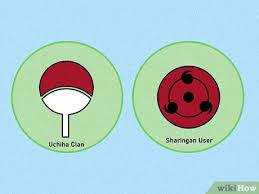
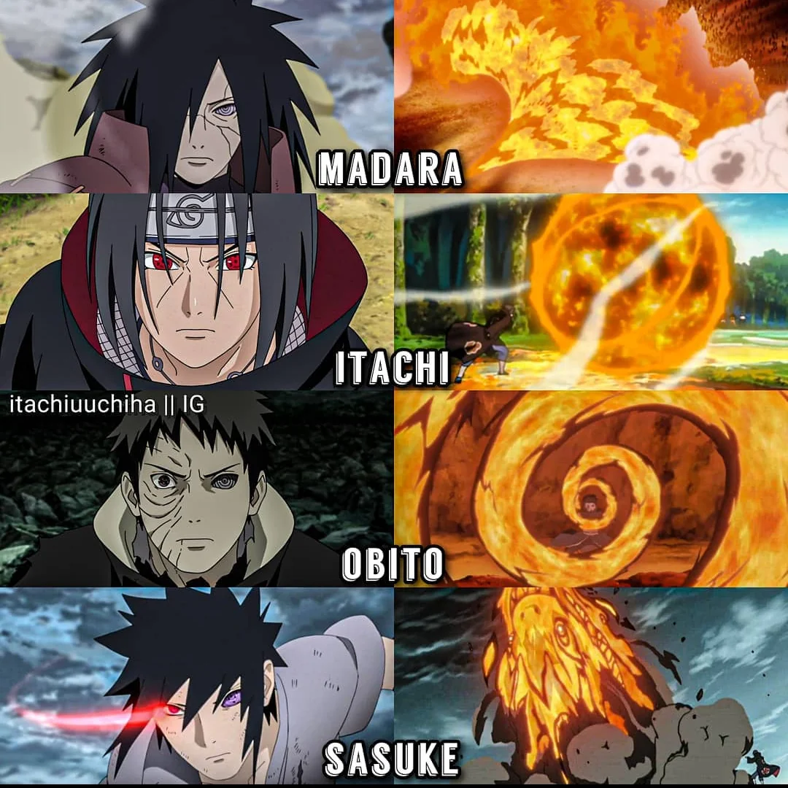
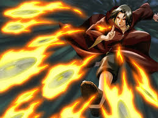
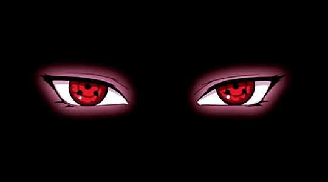
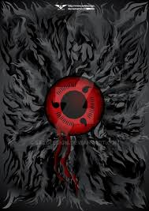
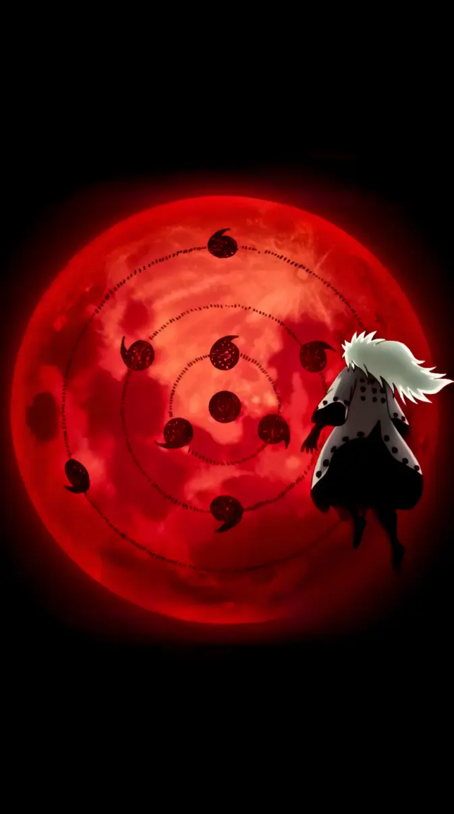
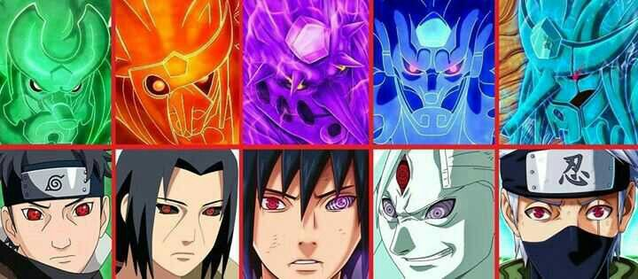
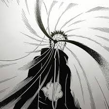
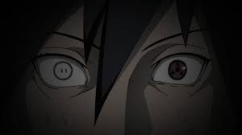

The Uchiha Clan is famous for its powerful and unique jutsu. Thanks to their Sharingan and strong chakra, Uchiha members mastered many techniques that became feared throughout the ninja world. Their abilities ranged from powerful fire attacks to advanced genjutsu and legendary visual powers.

The Great Fireball Jutsu is one of the most famous techniques of the Uchiha Clan. Users gather chakra in their chest and release a massive ball of fire from their mouth. Mastering this technique was considered a sign that a young Uchiha had become a true member of the clan.

This Fire Release technique launches multiple small fireballs toward an opponent. The attack is often combined with hidden weapons, making it difficult for enemies to defend against.
The Main Jutsu or the main power of Uchiha. The Sharingan allows Uchiha members to cast powerful illusions known as genjutsu. These illusions can confuse opponents, control their actions, or trap them in a false reality. Skilled users can defeat enemies without causing physical harm.

Amaterasu is a Mangekyo Sharingan ability that creates black flames. These flames are said to burn anything they touch and continue burning until the target is completely destroyed. It is one of the strongest fire-based techniques in the Naruto world.

Tsukuyomi is a powerful genjutsu used by Itachi Uchiha. It traps the victim inside an illusionary world where the user controls time, space, and reality. Although only a few seconds pass in the real world, the victim may experience days of suffering inside the illusion.

Susanoo is a giant warrior made entirely of chakra. It surrounds the user and acts as both offense and defense. Different Uchiha members possess unique forms of Susanoo, each with special weapons and abilities.

Kamui is a space-time ninjutsu associated with Obito Uchiha. This technique allows the user to teleport objects, attacks, and even themselves into another dimension. It also grants the ability to become intangible for short periods of time.
Izanagi is a forbidden Uchiha technique that allows the user to alter reality for a brief moment. Injuries, death, or unfavorable events can be transformed into illusions, giving the user another chance. However, using this technique permanently sacrifices one Sharingan.

Izanami is another forbidden technique developed to counter Izanagi. It traps the target in a repeating cycle of events until they accept reality and their true self. This powerful genjutsu was created to prevent the misuse of Izanagi.
The jutsu of the Uchiha Clan are among the most powerful abilities in the ninja world. From devastating fire techniques to legendary Sharingan powers, these abilities helped make the Uchiha Clan one of the most respected and feared clans in history.